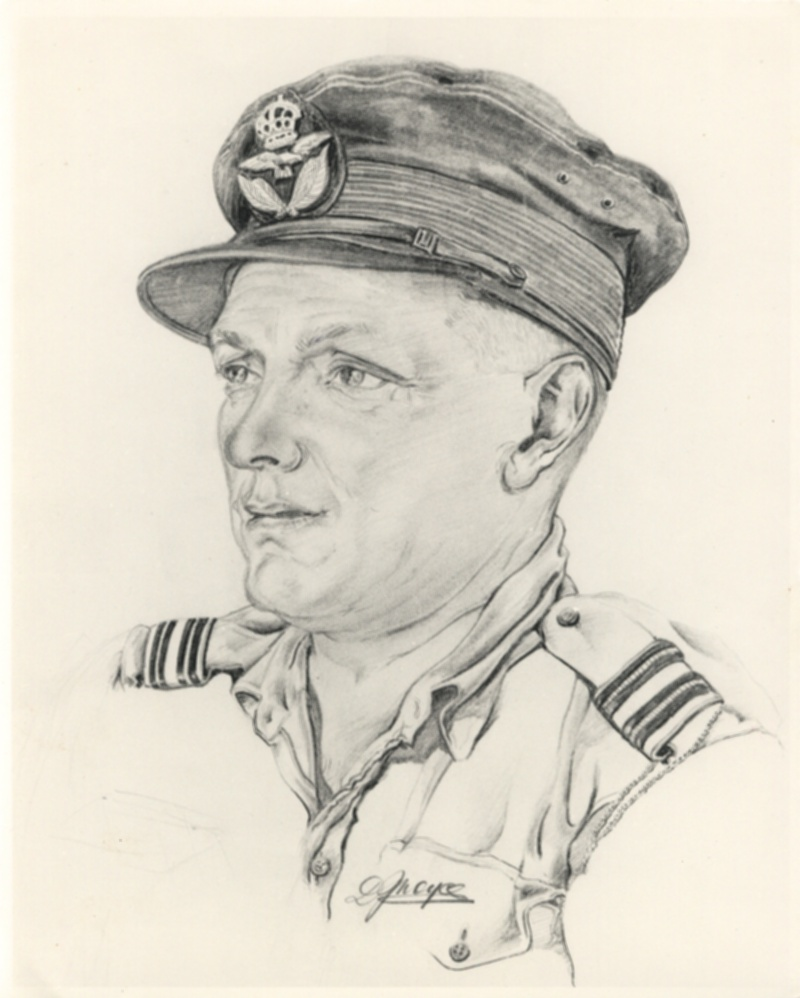

<html>


<!-- Mirrored from users.chariot.net.au/~quintrell/NOQ1902-16.htm by HTTrack Website Copier/3.x [XR&CO'2010], Fri, 01 Jul 2016 05:41:12 GMT -->
<head>
<meta http-equiv="Content-Type" content="text/html; charset=windows-1252">
<meta http-equiv="Content-Language" content="en-au">
<meta name="GENERATOR" content="Microsoft FrontPage 4.0">
<meta name="ProgId" content="FrontPage.Editor.Document">
<title>Norman Quintrell 1902-16</title>
<meta name="Microsoft Theme" content="quintrell-net 011, default">
<meta name="Microsoft Border" content="t, default">
</head>

<body background="themes/quintrell-net/blegtext.jpg" bgcolor="#CCCCCC" text="#000000" link="#993300" vlink="#0000FF" alink="#FF9900"><!--msnavigation--><table border="0" cellpadding="0" cellspacing="0" width="100%"><tr><td><!--mstheme--><font face="Trebuchet MS, Arial, Helvetica">

<p align="center"><font size="6"><strong></strong></font><br>
<nobr>[&nbsp;<a href="index-2.html">Home</a>&nbsp;]</nobr> <nobr>[&nbsp;<a href="Norman%20O%20Quintrell.html">Up</a>&nbsp;]</nobr> <nobr>[&nbsp;<a href="Neil_biographical.html">Neil&nbsp;Biographical</a>&nbsp;]</nobr> <nobr>[&nbsp;<a href="genealogy.html">Genealogy</a>&nbsp;]</nobr> <nobr>[&nbsp;<a href="family_stories.html">Family&nbsp;Stories</a>&nbsp;]</nobr> <nobr>[&nbsp;<a href="creative%20writing.html">Creative&nbsp;Writing</a>&nbsp;]</nobr><br>
</p>

<!--mstheme--></font></td></tr><!--msnavigation--></table><!--msnavigation--><table border="0" cellpadding="0" cellspacing="0" width="100%"><tr><!--msnavigation--><td valign="top"><!--mstheme--><font face="Trebuchet MS, Arial, Helvetica">
<div class="Section1">
  <h2><!--mstheme--><font color="#330099"><span style="FONT-WEIGHT: normal; FONT-FAMILY: Arial; mso-bidi-font-family: 'Times New Roman'">&nbsp;<o:p>
  </o:p>
  </span><!--mstheme--></font></h2>
  <div style="BORDER-RIGHT: windowtext 1.5pt double; PADDING-RIGHT: 4pt; BORDER-TOP: windowtext 1.5pt double; PADDING-LEFT: 4pt; PADDING-BOTTOM: 1pt; BORDER-LEFT: windowtext 1.5pt double; PADDING-TOP: 1pt; BORDER-BOTTOM: windowtext 1.5pt double">
    <h2 style="BORDER-RIGHT: medium none; PADDING-RIGHT: 0cm; BORDER-TOP: medium none; PADDING-LEFT: 0cm; PADDING-BOTTOM: 0cm; BORDER-LEFT: medium none; PADDING-TOP: 0cm; BORDER-BOTTOM: medium none; mso-border-alt: double windowtext 1.5pt; mso-padding-alt: 1.0pt 4.0pt 1.0pt 4.0pt"><!--mstheme--><font color="#330099"><span style="FONT-FAMILY: Arial; mso-bidi-font-family: 'Times New Roman'">&nbsp;<o:p>
    </o:p>
    </span><!--mstheme--></font></h2>
    <h2 style="BORDER-RIGHT: medium none; PADDING-RIGHT: 0cm; BORDER-TOP: medium none; PADDING-LEFT: 0cm; PADDING-BOTTOM: 0cm; BORDER-LEFT: medium none; PADDING-TOP: 0cm; BORDER-BOTTOM: medium none; mso-border-alt: double windowtext 1.5pt; mso-padding-alt: 1.0pt 4.0pt 1.0pt 4.0pt"><!--mstheme--><font color="#330099"><span style="FONT-FAMILY: Arial; mso-bidi-font-family: 'Times New Roman'">&nbsp;<o:p>
    </o:p>
    </span><!--mstheme--></font></h2>
    <h2 style="BORDER-RIGHT: medium none; PADDING-RIGHT: 0cm; BORDER-TOP: medium none; PADDING-LEFT: 0cm; PADDING-BOTTOM: 0cm; BORDER-LEFT: medium none; PADDING-TOP: 0cm; BORDER-BOTTOM: medium none; mso-border-alt: double windowtext 1.5pt; mso-padding-alt: 1.0pt 4.0pt 1.0pt 4.0pt"><!--mstheme--><font color="#330099"><span style="FONT-SIZE: 24pt; FONT-FAMILY: Arial; mso-bidi-font-family: 'Times New Roman'; mso-bidi-font-size: 10.0pt">IN
    HONOUR OF MY FATHER<o:p>
    </o:p>
    </span><!--mstheme--></font></h2>
    <p class="MsoNormal" style="BORDER-RIGHT: medium none; PADDING-RIGHT: 0cm; BORDER-TOP: medium none; PADDING-LEFT: 0cm; PADDING-BOTTOM: 0cm; BORDER-LEFT: medium none; PADDING-TOP: 0cm; BORDER-BOTTOM: medium none; TEXT-ALIGN: center; mso-border-alt: double windowtext 1.5pt; mso-padding-alt: 1.0pt 4.0pt 1.0pt 4.0pt" align="center"><b style="mso-bidi-font-weight: normal"><span style="FONT-SIZE: 24pt; FONT-FAMILY: Arial; mso-bidi-font-family: 'Times New Roman'; mso-bidi-font-size: 12.0pt">&nbsp;<o:p>
    </o:p>
    </span></b></p>
    <h3 style="BORDER-RIGHT: medium none; PADDING-RIGHT: 0cm; BORDER-TOP: medium none; PADDING-LEFT: 0cm; PADDING-BOTTOM: 0cm; BORDER-LEFT: medium none; PADDING-TOP: 0cm; BORDER-BOTTOM: medium none; mso-border-alt: double windowtext 1.5pt; mso-padding-alt: 1.0pt 4.0pt 1.0pt 4.0pt"><!--mstheme--><font color="#330099"><span style="text-shadow: none">NORMAN
    OLIVER QUINTRELL<o:p>
    </o:p>
    </span><!--mstheme--></font></h3>
    <p class="MsoNormal" style="BORDER-RIGHT: medium none; PADDING-RIGHT: 0cm; BORDER-TOP: medium none; PADDING-LEFT: 0cm; PADDING-BOTTOM: 0cm; BORDER-LEFT: medium none; PADDING-TOP: 0cm; BORDER-BOTTOM: medium none; TEXT-ALIGN: center; mso-border-alt: double windowtext 1.5pt; mso-padding-alt: 1.0pt 4.0pt 1.0pt 4.0pt" align="center"><b style="mso-bidi-font-weight: normal"><span style="FONT-SIZE: 24pt; FONT-FAMILY: Arial; mso-bidi-font-family: 'Times New Roman'; mso-bidi-font-size: 12.0pt">&nbsp;<o:p>
    </o:p>
    </span></b></p>
    <p class="MsoNormal" style="BORDER-RIGHT: medium none; PADDING-RIGHT: 0cm; BORDER-TOP: medium none; PADDING-LEFT: 0cm; PADDING-BOTTOM: 0cm; BORDER-LEFT: medium none; PADDING-TOP: 0cm; BORDER-BOTTOM: medium none; TEXT-ALIGN: center; mso-border-alt: double windowtext 1.5pt; mso-padding-alt: 1.0pt 4.0pt 1.0pt 4.0pt" align="center"><b style="mso-bidi-font-weight: normal"><span style="FONT-SIZE: 24pt; FONT-FAMILY: Arial; mso-bidi-font-family: 'Times New Roman'; mso-bidi-font-size: 12.0pt">3
    April 1902 –11 November 1974.<br style="mso-special-character: line-break">
    <br style="mso-special-character: line-break">
    <o:p>
    </o:p>
    </span></b></p>
  </div>
  <p class="MsoNormal" style="TEXT-ALIGN: center" align="center"><span style="FONT-FAMILY: Arial; mso-bidi-font-family: 'Times New Roman'">&nbsp;<o:p>
  </o:p>
  </span></p>
  <p class="MsoNormal" style="TEXT-ALIGN: center" align="center"><span style="FONT-FAMILY: Arial; mso-bidi-font-family: 'Times New Roman'"><v:shapetype 
id=_x0000_t75 coordsize = "21600,21600" o:preferrelative = "t" o:spt = "75" 
filled = "f" stroked = "f" path = " m@4@5 l@4@11@9@11@9@5 xe">
  <v:stroke 
joinstyle = "miter">
  </v:stroke>
  <v:formulas>
  <v:f eqn = 
"if lineDrawn pixelLineWidth 0 ">
  </v:f>
  <v:f eqn = "sum @0 1 0 ">
  </v:f>
  <v:f eqn = 
"sum 0 0 @1 ">
  </v:f>
  <v:f eqn = "prod @2 1 2 ">
  </v:f>
  <v:f eqn = 
"prod @3 21600 pixelWidth ">
  </v:f>
  <v:f eqn = 
"prod @3 21600 pixelHeight ">
  </v:f>
  <v:f eqn = "sum @0 0 1 ">
  </v:f>
  <v:f eqn = 
"prod @6 1 2 ">
  </v:f>
  <v:f eqn = "prod @7 21600 pixelWidth ">
  </v:f>
  <v:f eqn = 
"sum @8 21600 0 ">
  </v:f>
  <v:f eqn = "prod @7 21600 pixelHeight ">
  </v:f>
  <v:f eqn = 
"sum @10 21600 0 ">
  </v:f>
  </v:formulas>
  <v:path o:extrusionok = "f" 
gradientshapeok = "t" o:connecttype = "rect">
  </v:path>
  <o:lock aspectratio="t" 
v:ext="edit">
  </o:lock>
  </v:shapetype>
  <v:shape id=_x0000_i1025 
style="WIDTH: 411pt; HEIGHT: 523.5pt" type = "#_x0000_t75" coordsize = 
"21600,21600" o:borderleftcolor = "this" o:bordertopcolor = "this" 
o:borderrightcolor = "this" o:borderbottomcolor = "this" fillcolor = 
"winColor(17)">
  <v:imagedata o:title="NOQ1" src = 
"NOQ%201902-15_files/image001.html">
  </v:imagedata>
  <w:bordertop type = "single" 
width = "8">
  </w:bordertop>
  <w:borderleft type = "single" width = 
"8">
  </w:borderleft>
  <w:borderbottom type = "single" width = 
"8">
  </w:borderbottom>
  <w:borderright type = "single" width = 
"8">
  </w:borderright>
  </v:shape>
  <o:p>
  </o:p>
  </span></p>
  <p class="MsoNormal" style="TEXT-ALIGN: center" align="center"><span style="FONT-FAMILY: Arial; mso-bidi-font-family: 'Times New Roman'">&nbsp;<o:p>
  </o:p>
  </span><i><span style="FONT-FAMILY: Arial; mso-bidi-font-family: 'Times New Roman'">Artist&apos;s
  sketch of Flight Lt Norman Quintrell, New Guinea, 1944</span></i><span style="FONT-FAMILY: Arial; mso-bidi-font-family: 'Times New Roman'; mso-bidi-font-style: italic"><o:p>
  </o:p>
  </span></p>
  <p class="MsoNormal" style="TEXT-ALIGN: center" align="center"><span style="FONT-FAMILY: Arial; mso-bidi-font-family: 'Times New Roman'">&nbsp;<o:p>
  </o:p>
  </span><b><span style="FONT-SIZE: 16pt; FONT-FAMILY: Arial; mso-bidi-font-family: 'Times New Roman'; mso-bidi-font-size: 12.0pt">CONTENTS</span></b><b style="mso-bidi-font-weight: normal"><span style="FONT-SIZE: 16pt; FONT-FAMILY: Arial; mso-bidi-font-family: 'Times New Roman'; mso-bidi-font-size: 12.0pt"><o:p>
  </o:p>
  </span></b></p>
  <!--mstheme--></font><table style="WIDTH: 100%; BORDER-COLLAPSE: collapse; mso-padding-alt: 0cm 5.4pt 0cm 5.4pt" cellSpacing="0" cellPadding="0" width="100%" border="0">
    <tbody>
      <tr>
        <td style="PADDING-RIGHT: 5.4pt; PADDING-LEFT: 5.4pt; PADDING-BOTTOM: 0cm; WIDTH: 7.24%; PADDING-TOP: 0cm" vAlign="top" width="7%"><!--mstheme--><font face="Trebuchet MS, Arial, Helvetica">
          <p class="MsoNormal" style="MARGIN: 6pt 0cm"><b style="mso-bidi-font-weight: normal"><span style="FONT-FAMILY: Arial; mso-bidi-font-family: 'Times New Roman'">1<o:p>
          </o:p>
          </span></b></p>
        <!--mstheme--></font></td>
        <td style="PADDING-RIGHT: 5.4pt; PADDING-LEFT: 5.4pt; PADDING-BOTTOM: 0cm; WIDTH: 86.1%; PADDING-TOP: 0cm" vAlign="top" width="86%"><!--mstheme--><font face="Trebuchet MS, Arial, Helvetica">
          <p class="MsoNormal" style="MARGIN: 6pt 0cm"><b style="mso-bidi-font-weight: normal"><span style="FONT-FAMILY: Arial; mso-bidi-font-family: 'Times New Roman'">CHILDHOOD
          YEARS 1902 - 1916<o:p>
          </o:p>
          </span></b></p>
        <!--mstheme--></font></td>
        <td style="PADDING-RIGHT: 5.4pt; PADDING-LEFT: 5.4pt; PADDING-BOTTOM: 0cm; WIDTH: 6.66%; PADDING-TOP: 0cm" vAlign="top" width="6%"><!--mstheme--><font face="Trebuchet MS, Arial, Helvetica">
          <p class="MsoNormal" style="MARGIN: 6pt 0cm; TEXT-ALIGN: right" align="right"><b style="mso-bidi-font-weight: normal"><span style="FONT-FAMILY: Arial; mso-bidi-font-family: 'Times New Roman'">7<o:p>
          </o:p>
          </span></b></p>
        <!--mstheme--></font></td>
      </tr>
      <tr>
        <td style="PADDING-RIGHT: 5.4pt; PADDING-LEFT: 5.4pt; PADDING-BOTTOM: 0cm; WIDTH: 7.24%; PADDING-TOP: 0cm" vAlign="top" width="7%"><!--mstheme--><font face="Trebuchet MS, Arial, Helvetica">
          <p class="MsoNormal" style="MARGIN: 6pt 0cm"><b style="mso-bidi-font-weight: normal"><span style="FONT-FAMILY: Arial; mso-bidi-font-family: 'Times New Roman'">2<o:p>
          </o:p>
          </span></b></p>
        <!--mstheme--></font></td>
        <td style="PADDING-RIGHT: 5.4pt; PADDING-LEFT: 5.4pt; PADDING-BOTTOM: 0cm; WIDTH: 86.1%; PADDING-TOP: 0cm" vAlign="top" width="86%"><!--mstheme--><font face="Trebuchet MS, Arial, Helvetica">
          <p class="MsoNormal" style="MARGIN: 6pt 0cm"><b style="mso-bidi-font-weight: normal"><span style="FONT-FAMILY: Arial; mso-bidi-font-family: 'Times New Roman'">YOUTH
          AND MARRIAGE 1916 - 1928<o:p>
          </o:p>
          </span></b></p>
        <!--mstheme--></font></td>
        <td style="PADDING-RIGHT: 5.4pt; PADDING-LEFT: 5.4pt; PADDING-BOTTOM: 0cm; WIDTH: 6.66%; PADDING-TOP: 0cm" vAlign="top" width="6%"><!--mstheme--><font face="Trebuchet MS, Arial, Helvetica">
          <p class="MsoNormal" style="MARGIN: 6pt 0cm; TEXT-ALIGN: right" align="right"><b style="mso-bidi-font-weight: normal"><span style="FONT-FAMILY: Arial; mso-bidi-font-family: 'Times New Roman'">13<o:p>
          </o:p>
          </span></b></p>
        <!--mstheme--></font></td>
      </tr>
      <tr>
        <td style="PADDING-RIGHT: 5.4pt; PADDING-LEFT: 5.4pt; PADDING-BOTTOM: 0cm; WIDTH: 7.24%; PADDING-TOP: 0cm" vAlign="top" width="7%"><!--mstheme--><font face="Trebuchet MS, Arial, Helvetica">
          <p class="MsoNormal" style="MARGIN: 6pt 0cm"><b style="mso-bidi-font-weight: normal"><span style="FONT-FAMILY: Arial; mso-bidi-font-family: 'Times New Roman'">3<o:p>
          </o:p>
          </span></b></p>
        <!--mstheme--></font></td>
        <td style="PADDING-RIGHT: 5.4pt; PADDING-LEFT: 5.4pt; PADDING-BOTTOM: 0cm; WIDTH: 86.1%; PADDING-TOP: 0cm" vAlign="top" width="86%"><!--mstheme--><font face="Trebuchet MS, Arial, Helvetica">
          <p class="MsoTitle" style="MARGIN: 6pt 0cm; TEXT-ALIGN: left" align="left"><span style="FONT-SIZE: 12pt; FONT-FAMILY: Arial; mso-bidi-font-family: 'Times New Roman'; mso-bidi-font-weight: normal"><b>ESTABLISHING
          A FAMILY AND THE GREAT DEPRESSION 1928 - 1939</b><o:p>
          </o:p>
          </span></p>
        <!--mstheme--></font></td>
        <td style="PADDING-RIGHT: 5.4pt; PADDING-LEFT: 5.4pt; PADDING-BOTTOM: 0cm; WIDTH: 6.66%; PADDING-TOP: 0cm" vAlign="top" width="6%"><!--mstheme--><font face="Trebuchet MS, Arial, Helvetica">
          <p class="MsoNormal" style="MARGIN: 6pt 0cm; TEXT-ALIGN: right" align="right"><b style="mso-bidi-font-weight: normal"><span style="FONT-FAMILY: Arial; mso-bidi-font-family: 'Times New Roman'">19<o:p>
          </o:p>
          </span></b></p>
        <!--mstheme--></font></td>
      </tr>
      <tr>
        <td style="PADDING-RIGHT: 5.4pt; PADDING-LEFT: 5.4pt; PADDING-BOTTOM: 0cm; WIDTH: 7.24%; PADDING-TOP: 0cm" vAlign="top" width="7%"><!--mstheme--><font face="Trebuchet MS, Arial, Helvetica">
          <p class="MsoNormal" style="MARGIN: 6pt 0cm"><b style="mso-bidi-font-weight: normal"><span style="FONT-FAMILY: Arial; mso-bidi-font-family: 'Times New Roman'">4<o:p>
          </o:p>
          </span></b></p>
        <!--mstheme--></font></td>
        <td style="PADDING-RIGHT: 5.4pt; PADDING-LEFT: 5.4pt; PADDING-BOTTOM: 0cm; WIDTH: 86.1%; PADDING-TOP: 0cm" vAlign="top" width="86%"><!--mstheme--><font face="Trebuchet MS, Arial, Helvetica">
          <p class="MsoNormal" style="MARGIN: 6pt 0cm"><b style="mso-bidi-font-weight: normal"><span style="FONT-FAMILY: Arial">WAR
          YEARS 1939 - 1945</span><span style="FONT-FAMILY: Arial; mso-bidi-font-family: 'Times New Roman'"><o:p>
          </o:p>
          </span></b></p>
        <!--mstheme--></font></td>
        <td style="PADDING-RIGHT: 5.4pt; PADDING-LEFT: 5.4pt; PADDING-BOTTOM: 0cm; WIDTH: 6.66%; PADDING-TOP: 0cm" vAlign="top" width="6%"><!--mstheme--><font face="Trebuchet MS, Arial, Helvetica">
          <p class="MsoNormal" style="MARGIN: 6pt 0cm; TEXT-ALIGN: right" align="right"><b style="mso-bidi-font-weight: normal"><span style="FONT-FAMILY: Arial; mso-bidi-font-family: 'Times New Roman'">21<o:p>
          </o:p>
          </span></b></p>
        <!--mstheme--></font></td>
      </tr>
      <tr>
        <td style="PADDING-RIGHT: 5.4pt; PADDING-LEFT: 5.4pt; PADDING-BOTTOM: 0cm; WIDTH: 7.24%; PADDING-TOP: 0cm" vAlign="top" width="7%"><!--mstheme--><font face="Trebuchet MS, Arial, Helvetica">
          <p class="MsoNormal" style="MARGIN: 6pt 0cm"><b style="mso-bidi-font-weight: normal"><span style="FONT-FAMILY: Arial; mso-bidi-font-family: 'Times New Roman'">5<o:p>
          </o:p>
          </span></b></p>
        <!--mstheme--></font></td>
        <td style="PADDING-RIGHT: 5.4pt; PADDING-LEFT: 5.4pt; PADDING-BOTTOM: 0cm; WIDTH: 86.1%; PADDING-TOP: 0cm" vAlign="top" width="86%"><!--mstheme--><font face="Trebuchet MS, Arial, Helvetica">
          <p class="MsoHeading8" style="MARGIN: 6pt 0cm"><span style="FONT-SIZE: 12pt; mso-bidi-font-weight: normal"><b>THE
          MIDDLE YEARS AND NEW FREEDOMS: 1945 - 1958</b><o:p>
          </o:p>
          </span></p>
        <!--mstheme--></font></td>
        <td style="PADDING-RIGHT: 5.4pt; PADDING-LEFT: 5.4pt; PADDING-BOTTOM: 0cm; WIDTH: 6.66%; PADDING-TOP: 0cm" vAlign="top" width="6%"><!--mstheme--><font face="Trebuchet MS, Arial, Helvetica">
          <p class="MsoNormal" style="MARGIN: 6pt 0cm; TEXT-ALIGN: right" align="right"><b style="mso-bidi-font-weight: normal"><span style="FONT-FAMILY: Arial; mso-bidi-font-family: 'Times New Roman'">25<o:p>
          </o:p>
          </span></b></p>
        <!--mstheme--></font></td>
      </tr>
      <tr>
        <td style="PADDING-RIGHT: 5.4pt; PADDING-LEFT: 5.4pt; PADDING-BOTTOM: 0cm; WIDTH: 7.24%; PADDING-TOP: 0cm" vAlign="top" width="7%"><!--mstheme--><font face="Trebuchet MS, Arial, Helvetica">
          <p class="MsoNormal" style="MARGIN: 6pt 0cm"><b style="mso-bidi-font-weight: normal"><span style="FONT-FAMILY: Arial; mso-bidi-font-family: 'Times New Roman'">6<o:p>
          </o:p>
          </span></b></p>
        <!--mstheme--></font></td>
        <td style="PADDING-RIGHT: 5.4pt; PADDING-LEFT: 5.4pt; PADDING-BOTTOM: 0cm; WIDTH: 86.1%; PADDING-TOP: 0cm" vAlign="top" width="86%"><!--mstheme--><font face="Trebuchet MS, Arial, Helvetica">
          <h5 style="MARGIN: 6pt 0cm; TEXT-INDENT: 0cm; TEXT-ALIGN: left" align="left"><!--mstheme--><font color="#330099"><span style="FONT-SIZE: 12pt; mso-bidi-font-size: 10.0pt; mso-bidi-font-weight: normal"><font color="#000000">THE
          CANADIAN CONNECTION</font><o:p>
          </o:p>
          </span><!--mstheme--></font></h5>
        <!--mstheme--></font></td>
        <td style="PADDING-RIGHT: 5.4pt; PADDING-LEFT: 5.4pt; PADDING-BOTTOM: 0cm; WIDTH: 6.66%; PADDING-TOP: 0cm" vAlign="top" width="6%"><!--mstheme--><font face="Trebuchet MS, Arial, Helvetica">
          <p class="MsoNormal" style="MARGIN: 6pt 0cm; TEXT-ALIGN: right" align="right"><b style="mso-bidi-font-weight: normal"><span style="FONT-FAMILY: Arial; mso-bidi-font-family: 'Times New Roman'">29<o:p>
          </o:p>
          </span></b></p>
        <!--mstheme--></font></td>
      </tr>
      <tr>
        <td style="PADDING-RIGHT: 5.4pt; PADDING-LEFT: 5.4pt; PADDING-BOTTOM: 0cm; WIDTH: 7.24%; PADDING-TOP: 0cm" vAlign="top" width="7%"><!--mstheme--><font face="Trebuchet MS, Arial, Helvetica">
          <p class="MsoNormal" style="MARGIN: 6pt 0cm"><b style="mso-bidi-font-weight: normal"><span style="FONT-FAMILY: Arial; mso-bidi-font-family: 'Times New Roman'">7<o:p>
          </o:p>
          </span></b></p>
        <!--mstheme--></font></td>
        <td style="PADDING-RIGHT: 5.4pt; PADDING-LEFT: 5.4pt; PADDING-BOTTOM: 0cm; WIDTH: 86.1%; PADDING-TOP: 0cm" vAlign="top" width="86%"><!--mstheme--><font face="Trebuchet MS, Arial, Helvetica">
          <h6 style="MARGIN: 6pt 0cm; TEXT-ALIGN: left" align="left"><!--mstheme--><font color="#330099"><span style="FONT-SIZE: 12pt; mso-bidi-font-size: 10.0pt; mso-bidi-font-weight: normal"><font color="#000000">LAST
          YEARS 1967 - 1974</font><o:p>
          </o:p>
          </span><!--mstheme--></font></h6>
        <!--mstheme--></font></td>
        <td style="PADDING-RIGHT: 5.4pt; PADDING-LEFT: 5.4pt; PADDING-BOTTOM: 0cm; WIDTH: 6.66%; PADDING-TOP: 0cm" vAlign="top" width="6%"><!--mstheme--><font face="Trebuchet MS, Arial, Helvetica">
          <p class="MsoNormal" style="MARGIN: 6pt 0cm; TEXT-ALIGN: right" align="right"><b style="mso-bidi-font-weight: normal"><span style="FONT-FAMILY: Arial; mso-bidi-font-family: 'Times New Roman'">33<o:p>
          </o:p>
          </span></b></p>
        <!--mstheme--></font></td>
      </tr>
      <tr>
        <td style="PADDING-RIGHT: 5.4pt; PADDING-LEFT: 5.4pt; PADDING-BOTTOM: 0cm; WIDTH: 7.24%; PADDING-TOP: 0cm" vAlign="top" width="7%"><!--mstheme--><font face="Trebuchet MS, Arial, Helvetica">
          <p class="MsoNormal" style="MARGIN: 6pt 0cm"><b style="mso-bidi-font-weight: normal"><span style="FONT-FAMILY: Arial; mso-bidi-font-family: 'Times New Roman'">8<o:p>
          </o:p>
          </span></b></p>
        <!--mstheme--></font></td>
        <td style="PADDING-RIGHT: 5.4pt; PADDING-LEFT: 5.4pt; PADDING-BOTTOM: 0cm; WIDTH: 86.1%; PADDING-TOP: 0cm" vAlign="top" width="86%"><!--mstheme--><font face="Trebuchet MS, Arial, Helvetica">
          <p class="MsoBodyText2" style="MARGIN: 6pt 0cm; TEXT-ALIGN: left" align="left"><b style="mso-bidi-font-weight: normal"><span style="FONT-STYLE: normal; FONT-FAMILY: Arial; mso-bidi-font-family: 'Times New Roman'; mso-bidi-font-style: italic">POSTSCRIPT<o:p>
          </o:p>
          </span></b></p>
        <!--mstheme--></font></td>
        <td style="PADDING-RIGHT: 5.4pt; PADDING-LEFT: 5.4pt; PADDING-BOTTOM: 0cm; WIDTH: 6.66%; PADDING-TOP: 0cm" vAlign="top" width="6%"><!--mstheme--><font face="Trebuchet MS, Arial, Helvetica">
          <p class="MsoNormal" style="MARGIN: 6pt 0cm; TEXT-ALIGN: right" align="right"><b style="mso-bidi-font-weight: normal"><span style="FONT-FAMILY: Arial; mso-bidi-font-family: 'Times New Roman'">35<o:p>
          </o:p>
          </span></b></p>
        <!--mstheme--></font></td>
      </tr>
      <tr>
        <td style="PADDING-RIGHT: 5.4pt; PADDING-LEFT: 5.4pt; PADDING-BOTTOM: 0cm; WIDTH: 7.24%; PADDING-TOP: 0cm" vAlign="top" width="7%"><!--mstheme--><font face="Trebuchet MS, Arial, Helvetica">
          <p class="MsoNormal" style="MARGIN: 6pt 0cm"><b style="mso-bidi-font-weight: normal"><span style="FONT-FAMILY: Arial; mso-bidi-font-family: 'Times New Roman'">9<o:p>
          </o:p>
          </span></b></p>
        <!--mstheme--></font></td>
        <td style="PADDING-RIGHT: 5.4pt; PADDING-LEFT: 5.4pt; PADDING-BOTTOM: 0cm; WIDTH: 86.1%; PADDING-TOP: 0cm" vAlign="top" width="86%"><!--mstheme--><font face="Trebuchet MS, Arial, Helvetica">
          <p class="MsoBodyText" style="MARGIN: 6pt 0cm; TEXT-ALIGN: left" align="left"><b style="mso-bidi-font-weight: normal"><span style="FONT-FAMILY: Arial; mso-bidi-font-family: 'Times New Roman'">GENEALOGY
          OF NORMAN OLIVER QUINTRELL<o:p>
          </o:p>
          </span></b></p>
        <!--mstheme--></font></td>
        <td style="PADDING-RIGHT: 5.4pt; PADDING-LEFT: 5.4pt; PADDING-BOTTOM: 0cm; WIDTH: 6.66%; PADDING-TOP: 0cm" vAlign="top" width="6%"><!--mstheme--><font face="Trebuchet MS, Arial, Helvetica">
          <p class="MsoNormal" style="MARGIN: 6pt 0cm; TEXT-ALIGN: right" align="right"><b style="mso-bidi-font-weight: normal"><span style="FONT-FAMILY: Arial; mso-bidi-font-family: 'Times New Roman'">39<o:p>
          </o:p>
          </span></b></p>
        <!--mstheme--></font></td>
      </tr>
      <tr>
        <td style="PADDING-RIGHT: 5.4pt; PADDING-LEFT: 5.4pt; PADDING-BOTTOM: 0cm; WIDTH: 7.24%; PADDING-TOP: 0cm" vAlign="top" width="7%"><!--mstheme--><font face="Trebuchet MS, Arial, Helvetica">
          <p class="MsoNormal" style="MARGIN: 6pt 0cm"><b style="mso-bidi-font-weight: normal"><span style="FONT-FAMILY: Arial; mso-bidi-font-family: 'Times New Roman'">10<o:p>
          </o:p>
          </span></b></p>
        <!--mstheme--></font></td>
        <td style="PADDING-RIGHT: 5.4pt; PADDING-LEFT: 5.4pt; PADDING-BOTTOM: 0cm; WIDTH: 86.1%; PADDING-TOP: 0cm" vAlign="top" width="86%"><!--mstheme--><font face="Trebuchet MS, Arial, Helvetica">
          <p class="MsoNormal" style="MARGIN: 6pt 0cm"><b style="mso-bidi-font-weight: normal"><span style="FONT-FAMILY: Arial; mso-bidi-font-family: 'Times New Roman'">NORMAN
          QUINTRELL&apos;S CANADIAN DESCENDANTS<o:p>
          </o:p>
          </span></b></p>
        <!--mstheme--></font></td>
        <td style="PADDING-RIGHT: 5.4pt; PADDING-LEFT: 5.4pt; PADDING-BOTTOM: 0cm; WIDTH: 6.66%; PADDING-TOP: 0cm" vAlign="top" width="6%"><!--mstheme--><font face="Trebuchet MS, Arial, Helvetica">
          <p class="MsoNormal" style="MARGIN: 6pt 0cm; TEXT-ALIGN: right" align="right"><b style="mso-bidi-font-weight: normal"><span style="FONT-FAMILY: Arial; mso-bidi-font-family: 'Times New Roman'">48<o:p>
          </o:p>
          </span></b></p>
        <!--mstheme--></font></td>
      </tr>
      <tr>
        <td style="PADDING-RIGHT: 5.4pt; PADDING-LEFT: 5.4pt; PADDING-BOTTOM: 0cm; WIDTH: 7.24%; PADDING-TOP: 0cm" vAlign="top" width="7%"><!--mstheme--><font face="Trebuchet MS, Arial, Helvetica">
          <p class="MsoNormal" style="MARGIN: 6pt 0cm"><b style="mso-bidi-font-weight: normal"><span style="FONT-FAMILY: Arial; mso-bidi-font-family: 'Times New Roman'">11<o:p>
          </o:p>
          </span></b></p>
        <!--mstheme--></font></td>
        <td style="PADDING-RIGHT: 5.4pt; PADDING-LEFT: 5.4pt; PADDING-BOTTOM: 0cm; WIDTH: 86.1%; PADDING-TOP: 0cm" vAlign="top" width="86%"><!--mstheme--><font face="Trebuchet MS, Arial, Helvetica">
          <p class="MsoNormal" style="MARGIN: 6pt 0cm"><b style="mso-bidi-font-weight: normal"><span style="FONT-FAMILY: Arial">NORMAN
          QUINTRELL&apos;S AUSTRALIAN DESCENDANTS</span><span style="FONT-FAMILY: Arial; mso-bidi-font-family: 'Times New Roman'"><o:p>
          </o:p>
          </span></b></p>
        <!--mstheme--></font></td>
        <td style="PADDING-RIGHT: 5.4pt; PADDING-LEFT: 5.4pt; PADDING-BOTTOM: 0cm; WIDTH: 6.66%; PADDING-TOP: 0cm" vAlign="top" width="6%"><!--mstheme--><font face="Trebuchet MS, Arial, Helvetica">
          <p class="MsoNormal" style="MARGIN: 6pt 0cm; TEXT-ALIGN: right" align="right"><b style="mso-bidi-font-weight: normal"><span style="FONT-FAMILY: Arial; mso-bidi-font-family: 'Times New Roman'">49<o:p>
          </o:p>
          </span></b></p>
        <!--mstheme--></font></td>
      </tr>
    </tbody>
  </table><!--mstheme--><font face="Trebuchet MS, Arial, Helvetica">
  <p class="MsoNormal" style="TEXT-ALIGN: center" align="center"><b style="mso-bidi-font-weight: normal"><span style="FONT-SIZE: 16pt; FONT-FAMILY: Arial; mso-bidi-font-family: 'Times New Roman'; mso-bidi-font-size: 12.0pt">&nbsp;<o:p>
  </o:p>
  </span></b></p>
  <p class="MsoNormal" style="TEXT-ALIGN: center" align="center"><b style="mso-bidi-font-weight: normal"><span style="FONT-SIZE: 16pt; FONT-FAMILY: Arial; mso-bidi-font-family: 'Times New Roman'; mso-bidi-font-size: 12.0pt">1.
  <span style="mso-bidi-font-weight: bold">CHILDHOOD YEARS</span>: 1902 - 1916<o:p>
  </o:p>
  </span></b><span style="FONT-FAMILY: Arial; mso-bidi-font-family: 'Times New Roman'"><o:p>
  </o:p>
  </span></p>
  <p class="MsoNormal" style="TEXT-ALIGN: justify"><span style="FONT-FAMILY: Arial; mso-bidi-font-family: 'Times New Roman'">My
  father was born at Naracoorte, a country town in the southeastern corner of
  South Australia. At the beginning of the 20<sup>th</sup> century, it would
  have been a small town in the middle of sheep and dairy country. A hundred
  years later, it has grown into a prosperous centre where vineyards and pine
  forests have replaced much of the farmlands of an earlier time. Great river
  red gums are common trees in the area and, until the drainage channels of
  recent times, the low-lying land was often under water throughout the winter.<o:p>
  </o:p>
  </span></p>
  <p class="MsoNormal" style="TEXT-INDENT: 36pt; TEXT-ALIGN: justify"><span style="FONT-FAMILY: Arial; mso-bidi-font-family: 'Times New Roman'">My
  grandparents, Stephen and Edith Quintrell (nee Long) had married in Mt
  Gambier, the main town of the region, in 1894 and Norman was the youngest of
  their three sons, a brother to Roy (b. 1894) and Ralph (b.1898). Both he and
  Ralph seem to have been sickly children and did not handle the cold, wet
  winters of the southeast well. I remember my grandfather saying that they had
  to keep the infant Norman &apos;wrapped up in cotton wool&apos;. As a child, not
  understanding the metaphor, I puzzled over the image of my father swathed in
  rolls of cotton wool. Gramp was actually referring to Norman&apos;s and Ralph&apos;s
  propensity for winter croup, and in a letter dated 9 April 1904, he wrote to
  the Superintendent of Railways requesting a transfer to a warmer climate. In
  his covering letter he writes that &apos;if I could get a transfer before winter
  sets in it would save me a great deal of worry&apos;.<o:p>
  </o:p>
  </span><span style="FONT-FAMILY: Arial; mso-bidi-font-family: 'Times New Roman'"><o:p>
  </o:p>
  </span></p>
  <blockquote>
    <p class="MsoBodyTextIndent"><span style="FONT-FAMILY: Arial; mso-bidi-font-family: 'Times New Roman'">I
    most respectfully beg to apply for a transfer from the SouthEastern Division
    to Adelaide or any division North. My children suffer from croup &amp; the
    climate of Mt Gambier does not suit them. I think if I could get a transfer
    to a warmer climate it would be beneficial to their health. Hoping my
    application will receive your favourable consideration<o:p>
    </o:p>
    </span></p>
  </blockquote>
  <p class="MsoNormal" style="MARGIN-LEFT: 288pt; TEXT-ALIGN: justify"><span style="FONT-FAMILY: Arial; mso-bidi-font-family: 'Times New Roman'">I
  remain<o:p>
  </o:p>
  </span></p>
  <p class="MsoNormal" style="MARGIN-LEFT: 288pt; TEXT-ALIGN: justify"><span style="FONT-FAMILY: Arial; mso-bidi-font-family: 'Times New Roman'">SW
  Quintrell, Cleaner<o:p>
  </o:p>
  </span><span style="FONT-FAMILY: Arial; mso-bidi-font-family: 'Times New Roman'"><o:p>
  </o:p>
  </span></p>
  <p class="MsoNormal" style="TEXT-INDENT: 36pt; TEXT-ALIGN: justify"><span style="FONT-FAMILY: Arial; mso-bidi-font-family: 'Times New Roman'">It
  is possible that Gramp used his children&apos;s illness as a lever to move to a
  more favourable financial situation. The economy was in recession and, in a
  cost-cutting exercise by the South Australian Railways, he had been demoted
  from fireman to cleaner, with a subsequent reduction in wages. With a wife and
  three children to support, he may have seen the transfer as an opportunity to
  get his status and salary improved, and other correspondence during the same
  period addresses his wish to be reinstated. His strategy seems to have been
  successful, because within a year, he had regained his former status, &apos;at
  nine shillings<a title style="mso-footnote-id: ftn1" href="#_ftn1" name="_ftnref1"><span style="mso-special-character: footnote" class="MsoFootnoteReference">[1]</span></a>
  a day&apos;.<o:p>
  </o:p>
  </span></p>
  <p class="MsoBodyTextIndent" style="MARGIN-LEFT: 0cm; TEXT-INDENT: 36pt"><span style="FONT-FAMILY: Arial; mso-bidi-font-family: 'Times New Roman'">From
  1905 to 1911, the family lived at Port Pirie, an industrial town just over 200
  km north of Adelaide. Its main industry is a large smelting works, and some of
  Gramp&apos;s work was running the ore trains between Port Pirie and Broken Hill
  (to the east). Norman would have started school at Solomontown Primary School
  during their stay at Port Pirie. <o:p>
  </o:p>
  Roy had begun to learn the trumpet and an excerpt from the Port Pirie
  &apos;Advertiser&apos; of 1905 (when Roy would have been 11) records that<o:p>
  </o:p>
  </span></p>
  <p class="MsoNormal" style="MARGIN-LEFT: 36pt; TEXT-ALIGN: justify"><span style="FONT-FAMILY: Arial; mso-bidi-font-family: 'Times New Roman'">&nbsp;<o:p>
  </o:p>
  The solo &apos;Buttons&apos; by Master Roy Quintrell was a capital number. The song
  was well rendered and the dramatic effect was excellent, and the young
  performer thoroughly deserved the hearty applause which followed his abrupt
  exit.<o:p>
  </o:p>
  <o:p>
  </o:p>
  <o:p>
  </o:p>
  </span></p>
  <p class="MsoNormal" style="TEXT-ALIGN: center" align="center"><span style="FONT-FAMILY: Arial; mso-bidi-font-family: 'Times New Roman'"><v:shape 
id=_x0000_i1026 style="WIDTH: 235.5pt; HEIGHT: 414pt" type = "#_x0000_t75" 
coordsize = "21600,21600" o:borderleftcolor = "this" o:bordertopcolor = "this" 
o:borderrightcolor = "this" o:borderbottomcolor = "this" fillcolor = 
"winColor(17)">
  <v:imagedata o:title="noq2" src = 
"NOQ%201902-15_files/image003.html">
  </v:imagedata>
  <w:bordertop type = "single" 
width = "8">
  </w:bordertop>
  <w:borderleft type = "single" width = 
"8">
  </w:borderleft>
  <w:borderbottom type = "single" width = 
"8">
  </w:borderbottom>
  <w:borderright type = "single" width = 
"8">
  </w:borderright>
  </v:shape>
  <o:p>
  </o:p>
  <o:p>
  </o:p>
  </span></p>
  <p class="MsoBodyTextIndent" style="MARGIN-LEFT: 0cm; TEXT-ALIGN: center" align="center"><i><span style="FONT-FAMILY: Arial; mso-bidi-font-family: 'Times New Roman'">Norman
  and Ralph Quintrell, about 1911<o:p>
  </o:p>
  </span></i></p>
  <p class="MsoBodyTextIndent"><span style="FONT-FAMILY: Arial; mso-bidi-font-family: 'Times New Roman'">&nbsp;<o:p>
  </o:p>
  &nbsp;&nbsp;&nbsp; While they were at Port Pirie, Gramp&apos;s younger brother
  Clarrie came to stay with them, so Norman would have known his uncle well. In
  1911, Gramp was transferred to Petersburg (now &apos;Peterborough), a small
  farming town and, at that time, a main railway centre, east of Port Pirie and
  about 250 km north of Adelaide. <o:p>
  </o:p>
  </span></p>
  <p class="MsoNormal" style="TEXT-ALIGN: justify"><span style="FONT-FAMILY: Arial; mso-bidi-font-family: 'Times New Roman'">&nbsp;<o:p>
  </o:p>
  </span><b><span style="FONT-STYLE: normal; FONT-FAMILY: Arial; mso-bidi-font-family: 'Times New Roman'; mso-bidi-font-style: italic">PETERSBURG
  <o:p>
  </o:p>
  </span></b></p>
  <p class="MsoBodyText2" style="TEXT-ALIGN: justify"><span style="FONT-STYLE: normal; FONT-FAMILY: Arial; mso-bidi-font-family: 'Times New Roman'; mso-bidi-font-style: italic">&nbsp;<o:p>
  </o:p>
  The family settled into one of the railway cottages close to the railway
  yards. Steve was on a regular run from Petersburg to Cockburn, a small town on
  the South Australia – New South Wales Border. It is likely the trains
  carried ore from the mines of Broken Hill in New South Wales to the smelters
  at Port Pirie. In his memoir, Steve writes much about his experiences on the
  run.<a title style="mso-footnote-id: ftn2" href="#_ftn2" name="_ftnref2"><span style="mso-special-character: footnote" class="MsoFootnoteReference">[2]</span></a><o:p>
  </o:p>
  </span></p>
  <p class="MsoBodyText2" style="TEXT-INDENT: 36pt; TEXT-ALIGN: justify"><span style="FONT-STYLE: normal; FONT-FAMILY: Arial; mso-bidi-font-family: 'Times New Roman'; mso-bidi-font-style: italic">The
  newspapers of the time report a visit from the governor of South Australia,
  Admiral Sir DH Bosanquet in June 1913. In my imagination, the day is one of
  the clear bright days of the mid-north under an endless sky. The horses of the
  Light Horse Brigade are stamping and snorting at the station as they wait for
  the vice-regal party to arrive. The soldiers are resplendent in their khaki
  dress uniforms, the leather of their belts and bandoliers shining with polish,
  the plumes in their slouch hats feathering in a light breeze. A bugler sits
  astride his horse, sun sparkling off the polished bronze of his bugle. The
  train steams into the station, the engine decorated with bunting in the red,
  gold and navy blue state colours. Perhaps Stephen is driving the train. My
  grandmother Edie is standing proudly at the station with her three sons, and a
  little apart from them, among a group of railway workers, is Stephen&apos;s
  younger brother Clarrie. When the vice-regal party has descended from the
  official coach and been greeted by the mayor, the town band strikes up the
  National Anthem. People stand to attention, the men remove their hats, and all
  sing &apos;God save the King&apos; with patriotic fervour. The governor and Lady
  Bosanquet are escorted to their car and the procession to the showgrounds
  begins, the Light Horse leading the official cars, and the town band
  trumpeting out a military tune. The townsfolk straggle along behind.</span><span lang="EN-US" style="FONT-STYLE: normal; FONT-FAMILY: Arial; mso-bidi-font-family: 'Times New Roman'; mso-bidi-font-style: italic; mso-ansi-language: EN-US"><o:p>
  </o:p>
  </span></p>
  <p class="MsoBodyText2" style="TEXT-ALIGN: justify"><span style="FONT-STYLE: normal; FONT-FAMILY: Arial; mso-bidi-font-family: 'Times New Roman'; mso-bidi-font-style: italic"><span style="mso-tab-count: 1">&nbsp;&nbsp;&nbsp;&nbsp;&nbsp;&nbsp;&nbsp;&nbsp;&nbsp;&nbsp;&nbsp;
  </span>My uncle Roy is struck by the glamour of the Light Horse and he
  detaches himself from his mother&apos;s side and runs on ahead of the townsfolk
  with some of his mates. They pass the vice-regal cars and with whoops and
  cries run alongside the horsemen. One of the officers gives them a stern look
  and, chastened,<span style="mso-spacerun: yes">&nbsp; </span>they fall back
  muting their cries and chattering among themselves.</span><span lang="EN-US" style="FONT-STYLE: normal; FONT-FAMILY: Arial; mso-bidi-font-family: 'Times New Roman'; mso-bidi-font-style: italic; mso-ansi-language: EN-US"><o:p>
  </o:p>
  </span></p>
  <p class="MsoBodyText2" style="TEXT-ALIGN: justify"><span style="FONT-STYLE: normal; FONT-FAMILY: Arial; mso-bidi-font-family: 'Times New Roman'; mso-bidi-font-style: italic"><span style="mso-tab-count: 1">&nbsp;&nbsp;&nbsp;&nbsp;&nbsp;&nbsp;&nbsp;&nbsp;&nbsp;&nbsp;&nbsp;
  </span>At the showgrounds there are speeches by the Mayor and the Governor,
  and the band plays some popular march tunes. The women of the town have
  prepared afternoon tea and under marquees there are trestles, covered with
  starched white table clothes, carrying a huge assortment of cakes, sponges,
  scones, home-made jams and country cream. A seemingly endless supply of cups
  of tea flows from big teapots. Behind the grandstand, some of the working men
  and local lads are drinking beer. Roy joins them and, although under age and
  aware of the presence of the town policemen at the showgrounds, ventures a
  couple of glasses. Among the general conversation, there is talk of war.
  Conflict has broken out again in the Balkans, and there are concerns about the
  plans of Germany.</span><span lang="EN-US" style="FONT-STYLE: normal; FONT-FAMILY: Arial; mso-bidi-font-family: 'Times New Roman'; mso-bidi-font-style: italic; mso-ansi-language: EN-US"><o:p>
  </o:p>
  </span></p>
  <p class="MsoBodyText2" style="TEXT-ALIGN: justify"><span style="FONT-STYLE: normal; FONT-FAMILY: Arial; mso-bidi-font-family: 'Times New Roman'; mso-bidi-font-style: italic"><span style="mso-tab-count: 1">&nbsp;&nbsp;&nbsp;&nbsp;&nbsp;&nbsp;&nbsp;&nbsp;&nbsp;&nbsp;&nbsp;
  </span>In February of the next year, with a hot wind blowing from the north
  and whipping red-brown dust across the town, the residents of Petersburg get
  their first ever sight of an aeroplane. There is a drone in the sky to the
  south and a plane takes shape against the dirt-smudged sky. A Cauldron biplane
  flies low across the town and banks to land in a field on the edge of town.
  School has just ended for the day so the young boys, my father among them,
  rush out to see the plane. They stand at a respectful distance from the new
  marvel, tongue-tied in their awe. Later they quiz their fathers and older
  brothers about its capacities. How fast can it fly? How high? How far? Is it
  true that they will be used in a war to drop bombs? Norman is dazzled by the
  new contraption and wishes that he too could fly high over the countryside,
  seeing the whole world laid out below.</span><span lang="EN-US" style="FONT-STYLE: normal; FONT-FAMILY: Arial; mso-bidi-font-family: 'Times New Roman'; mso-bidi-font-style: italic; mso-ansi-language: EN-US"><o:p>
  </o:p>
  </span></p>
  <p class="MsoBodyText2" style="TEXT-ALIGN: justify"><span style="FONT-STYLE: normal; FONT-FAMILY: Arial; mso-bidi-font-family: 'Times New Roman'; mso-bidi-font-style: italic"><span style="mso-tab-count: 1">&nbsp;&nbsp;&nbsp;&nbsp;&nbsp;&nbsp;&nbsp;&nbsp;&nbsp;&nbsp;&nbsp;
  </span>Six months later, Britain is at war with Germany and the peace of
  Petersburg is also shaken. The railways lay off workers and require permanent
  staff to take holidays. The train service from Broken Hill to Port Pirie is
  cut by half. There are murmurs of discontent in the town against the Germans
  and agitation for renaming the town begins. A Military Sports Day is planned
  for June 1915 amid news of the terrible Australian losses at Gallipoli. The
  two organising secretaries of the Sports Day are of German descent, and
  posters advertising the day are defaced calling for, and eventually securing,
  their resignation.</span><span style="FONT-STYLE: normal; FONT-FAMILY: Arial; mso-bidi-font-family: 'Times New Roman'; mso-bidi-font-style: italic; mso-ansi-language: EN-US">
  </span><span style="FONT-STYLE: normal; FONT-FAMILY: Arial; mso-bidi-font-family: 'Times New Roman'; mso-bidi-font-style: italic">The
  Sports Day begins with a procession from the town, led again by the Light
  Horse, with the Federal Band and the School Drum and Fife Band as part of the
  procession. Roy marches with the Federal band as a trumpeter, and my father
  with the school band. At the showgrounds, there are foot races, three-legged
  races, hurdles, relay races and long jumps. There are patriotic speeches and
  an enlisting officer of the Australian Army is present urging young men to
  enlist for the defence of the Empire. Would this be the day Roy volunteered
  for the Light Horse? </span><span lang="EN-US" style="FONT-STYLE: normal; FONT-FAMILY: Arial; mso-bidi-font-family: 'Times New Roman'; mso-bidi-font-style: italic; mso-ansi-language: EN-US"><o:p>
  </o:p>
  </span></p>
  <p class="MsoBodyText2" style="TEXT-INDENT: 36pt; TEXT-ALIGN: justify"><span style="FONT-STYLE: normal; FONT-FAMILY: Arial; mso-bidi-font-family: 'Times New Roman'; mso-bidi-font-style: italic">&apos;Clarrie
  was always at the kids about the war&apos;, Stephen records in his memoirs and,
  when Roy enlisted in 1915, Clarrie decided to enlist also. However, Clarrie
  was not assigned to the Light Horse but to the infantry and sailed for France
  in 1916. He disembarked at Marseilles on 12 June 1916. Two months later he was
  killed in action and is buried at Mouquet Farm in France. Roy had a happier
  outcome, being posted to Palestine and surviving the war. In my imagined
  story, it is Roy who sounded the charge for the last great cavalry charge of
  warfare, the charge at Beersheba in 1917.</span><span lang="EN-US" style="FONT-STYLE: normal; FONT-FAMILY: Arial; mso-bidi-font-family: 'Times New Roman'; mso-bidi-font-style: italic; mso-ansi-language: EN-US"><o:p>
  </o:p>
  </span></p>
  <p class="MsoBodyText2" style="TEXT-ALIGN: justify"><span style="FONT-STYLE: normal; FONT-FAMILY: Arial; mso-bidi-font-family: 'Times New Roman'; mso-bidi-font-style: italic"><span style="mso-tab-count: 1">&nbsp;&nbsp;&nbsp;&nbsp;&nbsp;&nbsp;&nbsp;&nbsp;&nbsp;&nbsp;&nbsp;
  </span>In 1916, Stephen and his family moved from Petersburg (its name now
  Anglicised to Peterborough) to Adelaide. Norman was 14. By the end of the war,
  he had seen three of his father&apos;s brothers go to war and none return –
  Clarrie and Dick dead in France and John, after a traumatic war, buried at sea
  on the way home<a title style="mso-footnote-id: ftn3" href="#_ftn3" name="_ftnref3"><span style="mso-special-character: footnote" class="MsoFootnoteReference">[3]</span></a>.
  Roy had served with the Light horse and lived to tell the tale. I wonder what
  stories he told his impressionable younger brother on his return from
  Palestine? </span><span lang="EN-US" style="FONT-STYLE: normal; FONT-FAMILY: Arial; mso-bidi-font-family: 'Times New Roman'; mso-bidi-font-style: italic; mso-ansi-language: EN-US"><o:p>
  </o:p>
  </span></p>
  <p class="MsoBodyText2" style="TEXT-INDENT: 36pt; TEXT-ALIGN: justify"><span style="FONT-STYLE: normal; FONT-FAMILY: Arial; mso-bidi-font-family: 'Times New Roman'; mso-bidi-font-style: italic">From
  1918-1920 Norman underwent basic military training in the Citizens&apos; Military
  Force. I am unsure whether this was, as in 1955 when it was my turn,
  compulsory for all fit 18 year olds, or a voluntary exercise. What I do know
  is that in 1940, when there was war again, my father decided that it was his
  turn. He enlisted before Japan had entered the war, so it was not out of a
  belief that there was an immediate threat to Australia and his family. I have
  to imagine that it was out of a belief that he was part of the British Empire
  and that it was his patriotic duty. I wonder what contribution childhood
  memories made to his decision. What stories did Roy bring back of the daring
  of the Light Horse? What burden was laid on an impressionable young man by
  stories of the heroism of his three dead uncles? And what influence did
  recollections of the Light Horse brigade marching to the brass band, and of a
  biplane dropping down out of the summer sun?</span><span style="FONT-FAMILY: Arial; mso-bidi-font-family: 'Times New Roman'">
  </span><span lang="EN-US" style="FONT-FAMILY: Arial; mso-bidi-font-family: 'Times New Roman'; mso-ansi-language: EN-US"><o:p>
  </o:p>
  </span><o:p>
  </o:p>
</div>
<div style="mso-element: footnote-list">
  <br clear="all">
  <!--msthemeseparator--><p align="left"></p>
  <div id="ftn1" style="mso-element: footnote">
    <p class="MsoFootnoteText"><a title style="mso-footnote-id: ftn1" href="#_ftnref1" name="_ftn1"><span style="mso-special-character: footnote" class="MsoFootnoteReference">[1]</span></a>
    90 cents</p>
  </div>
  <div id="ftn2" style="mso-element: footnote">
    <p class="MsoFootnoteText"><a title style="mso-footnote-id: ftn2" href="#_ftnref2" name="_ftn2"><span style="mso-special-character: footnote" class="MsoFootnoteReference">[2]</span></a>
    see the memoir of Stephen William Quintrell at <a href="../../www.quintrell.net/index.html">www.quintrell.net</a></p>
  </div>
  <div id="ftn3" style="mso-element: footnote">
    <p class="MsoFootnoteText"><a title style="mso-footnote-id: ftn3" href="#_ftnref3" name="_ftn3"><span style="mso-special-character: footnote" class="MsoFootnoteReference">[3]</span></a>
    see &apos;The Quintrell brothers in World War 1&apos; at <a href="../../www.quintrell.net/index.html">www.quintrell.net</a>.</p>
  </div>
</div>
&nbsp;<!--mstheme--></font><!--msnavigation--></td></tr><!--msnavigation--></table></body>


<!-- Mirrored from users.chariot.net.au/~quintrell/NOQ1902-16.htm by HTTrack Website Copier/3.x [XR&CO'2010], Fri, 01 Jul 2016 05:41:13 GMT -->
</html>